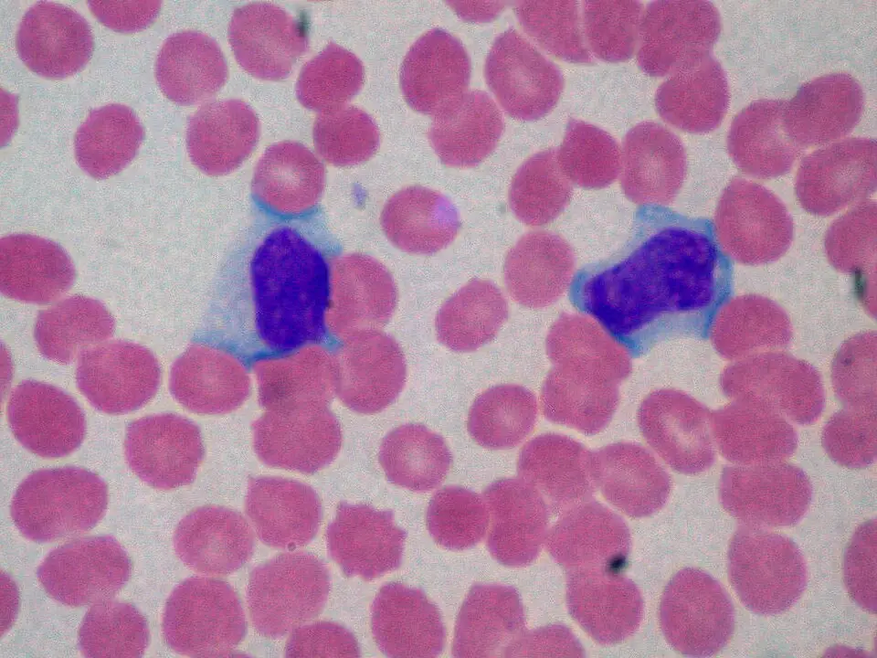

DX.10 — Fatigue post-infectieuse (infection virale récente)
1. Définition
La fatigue post-infectieuse persiste ou apparaît après une infection aiguë. Elle ne s'explique par aucune autre maladie. Plusieurs définitions coexistent, et le médecin s'appuie donc sur les critères du NICE3.
L'OMS a classé le syndrome de fatigue post-viral sous le code 8E49 de la CIM-11, avec l'encéphalomyélite myalgique15. Le médecin évite donc de poser ce diagnostic avant les paliers de 6 semaines et de 3 mois du NICE3.
Le NICE 2021 fixe le soupçon d'un syndrome de fatigue chronique à 6 semaines chez l'adulte et à 4 chez l'enfant3. Il confirme le diagnostic après 3 mois3.
Une infection active est exclue.
2. Épidémiologie (Suisse, puis Europe)
Une cohorte de Genève a suivi 410 patients ambulatoires de COVID-19, symptomatiques au printemps 2020, pendant 7 à 9 mois6. Dans cette cohorte, 39,0 % gardaient des symptômes et 20,7 % une fatigue (Nehme 2021, sur 410)6. Le risque dépend de la sévérité de l'infection aiguë (Hickie 2006)1. Chez l'adolescent, le sexe féminin et la fatigue à 12 mois prédisent la persistance (Katz 2009)2. L'enjeu est fonctionnel (tableau).
| Population et infection | Délai | Fréquence de la fatigue ou de la maladie prolongée dans cette population après cette infection (%) | Source |
|---|---|---|---|
| Australie rurale, 253 patients (EBV, fièvre Q, virus Ross River)1 | 6 mois1 | 12 % de maladie prolongée ; 11 % de syndrome de fatigue chronique ; le risque dépend de la sévérité de l'infection aiguë, non de l'âge, du sexe, du profil psychologique ou de l'agent1 | Hickie 20061 |
| Adolescents de 12 à 18 ans après mononucléose (301 patients)2 | 6, 12, 24 mois2 | 13 %, 7 %, 4 % de syndrome de fatigue chronique2 | Katz 20092 |
| Genève, 410 adultes ambulatoires après COVID-196 | 7 à 9 mois6 | 20,7 % de fatigue6 | Nehme 20216 |
| Zurich, 78 personnes avec séquelles et 327 sans séquelles de COVID-197 | 3 ans7 | Arrêt de travail d'un mois ou plus : 11,5 % (9 sur 78) contre 4,0 % (13 sur 327)7 | Ballouz 20267 |
Données de cohorte suisses et européennes après infection
La cohorte zurichoise de 431 adultes montre le poids des symptômes prolongés après COVID-1916. Six à huit mois après le diagnostic, 111 participants (26 %) déclaraient ne pas avoir récupéré16. Au total, 233 participants (55 %) rapportaient une fatigue, mesurée par la Fatigue Assessment Scale16.
Le recours aux soins reste pourtant partiel. Au total, 170 participants (40 %) ont consulté un médecin généraliste pour la COVID-19 après la phase aiguë16. Un tiers des personnes non rétablies (37 sur 111) est resté sans soin supplémentaire16.
Une seconde cohorte zurichoise suit 1106 adultes infectés et 628 adultes non infectés pendant 24 mois17. À 6 mois, 22,9 % des personnes infectées ne se sont pas entièrement rétablies, puis 18,5 % à 12 mois et 17,2 % à 24 mois17. Le risque excédentaire par rapport aux témoins atteint 9,4 % pour le malaise post-effort et 5,4 % pour la fatigue17.
Une cohorte américaine mesure l'incidence du syndrome de type ME/CFS après COVID-1920. Parmi les participants infectés, 4,5 % (531 sur 11 785) remplissent les critères de l'Institute of Medicine 2015, contre 0,6 % des non infectés (9 sur 1439)20. Le rapport de risque instantané est de 4,9320.
L'Europe manque de chiffres fiables, car les définitions de cas diffèrent et de nombreux médecins hésitent à poser le diagnostic. L'incidence et la prévalence réelles restent donc inconnues24.
| Cohorte | Population et suivi | Résultat chiffré | Source |
|---|---|---|---|
| Zurich 2021 | 431 adultes, 6 à 8 mois après le diagnostic16 | 26 % non rétablis ; 55 % de fatigue ; 40 % de consultations de médecine générale16 | Menges 202116 |
| Zurich 2023 | 1106 adultes infectés et 628 non infectés, suivi de 24 mois17 | Non-rétablissement : 22,9 % à 6 mois, 18,5 % à 12 mois, 17,2 % à 24 mois17 | Ballouz 202317 |
| RECOVER | 11 785 participants infectés et 1439 non infectés20 | ME/CFS (critères IOM 2015) : 4,5 % contre 0,6 %20 | Vernon 202520 |
| Europe (EUROMENE) | Revue des études économiques24 | Incidence et prévalence inconnues faute de définition commune24 | Pheby 202024 |
3. Physiopathologie
Le mécanisme exact reste inconnu. Les sources lues n'établissent aucune lésion unique. Seule la sévérité de l'infection aiguë prédit la fatigue prolongée, pour des infections très différentes. Un même tableau stéréotypé suit chaque agent, ce qui suggère une voie commune.
Cascade, étape par étape (modèle de travail, hypothèses).
Amorce, niveau moléculaire : l'infection aiguë déclenche une réponse immunitaire intense, avec des cytokines inflammatoires. Développement, niveau cellulaire : l'activation immunitaire persiste ou se dérègle après l'élimination du virus. Installation, niveau tissulaire : le sommeil, la régulation autonome et la tolérance à l'effort se dérèglent. Maintien, niveau clinique : l'effort aggrave les symptômes et le patient réduit son activité.
Ce modèle explique la fatigue persistante, le malaise post-effort et les troubles cognitifs. Il reste une hypothèse : les sources lues ne le démontrent pas. Le pronostic dépend du temps et de la sévérité initiale.
| Lésion ou perturbation | Exploration qui la montre | Thérapeutique et mécanisme |
|---|---|---|
| Infection aiguë sévère | Histoire datée ; CRP, hémogramme ; sérologie selon la clinique | Traiter la cause aiguë ; repos adapté pour limiter la dépense d'énergie |
| Malaise post-effort | Anamnèse : aggravation retardée après l'effort | Gestion de l'énergie : rester sous le seuil qui déclenche l'aggravation |
| Sommeil non réparateur | Questions sur le sommeil et les réveils | Mesures d'hygiène du sommeil ; revue des médicaments |
| Intolérance orthostatique | Pouls et tension couché puis debout | Avis spécialisé si sévère ou croissante |
| Douleur, fièvre légère | Anamnèse ; température mesurée | ParacétamolLe paracétamol (Dafalgan®, n° Swissmedic 47503) est un antalgique et antipyrétique non opioïde, classé ATC N02BE01 dans le groupe N02B9. ou ibuprofèneL'ibuprofène (Irfen Dolo L, n° Swissmedic 61210) est un anti-inflammatoire non stéroïdien, classé ATC M01AE01 dans le groupe M01A10. à dose minimale, durée courte |
| Autre cause méconnue | Bilan de base (point 9) | Traitement spécifique de la cause trouvée |
4. Démarche diagnostique
La démarche part du titre : elle concerne une fatigue après une infection virale récente. Le diagnostic est clinique et d'exclusion. Aucun test ne le confirme3.
Étape 1. Drapeaux rouges à exclure d'abord (🚩 = menace vitale ou perte de chance).
| Drapeau | Signe ou examen qui tranche | Piège | Conduite immédiate |
|---|---|---|---|
| 🚩 Infection active ou graveRouge : une fièvre qui persiste, des frissons ou un foyer évoquent une infection non guérie ou une complication. Une endocardite ou un sepsis nécessitent un traitement urgent. | Température mesurée, foyer infectieux, CRP | Prendre la fièvre pour une séquelle virale | Bilan infectieux, hospitalisation si instabilité |
| 🚩 Atteinte cardiaque ou pulmonaireRouge : douleur thoracique, dyspnée au repos, palpitations ou syncope. Une myocardite, une embolie ou une arythmie menacent la vie. Après COVID-19, ces signes imposent une exploration3. | ECG, saturation, auscultation | Mettre la dyspnée sur le compte de la fatigue | Urgence : ECG, appel du 144 si instabilité3 |
| 🚩 Perte de poids, sueurs nocturnes, adénopathiesRouge : cette triade évoque un lymphome, une tuberculose ou une infection par le VIH. Elle ne s'explique pas par une virose bénigne. | Palpation des aires ganglionnaires ; poids ; hémogramme | Attribuer l'amaigrissement à la maladie virale | Imagerie et avis spécialisé |
| 🚩 Douleur abdominale gauche aiguë après mononucléoseRouge : la rate est augmentée de volume pendant la mononucléose. Une douleur brutale du flanc gauche évoque une rupture, souvent sans traumatisme. Environ 80 % des ruptures surviennent dans les trois semaines suivant le début ; la mortalité est de 4,8 %14. | Palpation de la rate ; examen abdominal | Banaliser une douleur abdominale | Urgence chirurgicale |
| 🚩 Idées suicidaires ou dépression sévèreRouge : une fatigue prolongée s'accompagne souvent d'humeur dépressive. Une idée suicidaire impose une évaluation psychiatrique immédiate. | Entretien direct sur l'humeur et les idées suicidaires | Considérer la tristesse comme une réaction normale | Avis psychiatrique urgent |
| 🚩 Signes neurologiques focauxRouge : un déficit moteur, des troubles visuels ou une confusion ne relèvent pas de la fatigue. Ils évoquent une atteinte du système nerveux. | Examen neurologique | Mettre le déficit sur le compte de l'asthénie | Imagerie cérébrale urgente et avis de neurologie |
Étape 2. En l'absence de drapeau rouge.
1. Le médecin doit dater l'infection et sa sévérité, puis la durée de la fatigue (point 5).
2. Chercher le malaise post-effort, signe qui oriente vers un syndrome post-infectieux4.
3. Examiner le patient de façon ciblée (point 6).
4. Faire le bilan de base pour exclure une autre cause (point 9)3.
5. Avant 6 semaines, le médecin doit rassurer et conseiller ; après 6 semaines, il soupçonne un syndrome de fatigue chronique ; après 3 mois, il confirme le diagnostic3.
5. Anamnèse ciblée et drapeaux rouges
Chaque question sert à dater la fatigue, à mesurer son impact ou à exclure une autre cause. Le médecin doit demander aussi les médicaments et le contexte suisse : voyage, contact avec la tuberculose.
La fenêtre des questions clés précise ce que chaque réponse change à la décision.
Drapeaux rouges qui imposent une action immédiate.
• Une fièvre persistante ou des frissons imposent une urgence et un bilan infectieux.
• Une douleur thoracique, une dyspnée de repos ou une syncope imposent une urgence et un ECG.
• Une douleur abdominale gauche brutale après mononucléose impose une urgence chirurgicale.
• Une perte de poids avec adénopathies impose une imagerie et un avis spécialisé.
• Idées suicidaires : avis psychiatrique urgent.
• Déficit neurologique : imagerie et neurologie.
6. Examen physique ciblé, région par région
L'examen décrit le normal avant le pathologique. La valeur des signes est qualitative. Le but est d'écarter une autre cause.
L'examen suit l'ordre topo-systémique, en sept temps : signes vitaux ; état général et poids ; oRL et cou ; cœur et poumons. Il se poursuit par abdomen ; peau et ganglions ; puis neurologie et humeur. Chaque fenêtre précise le normal, le signe pathologique, sa technique et son piège.
7. Approche syndromique
Quatre syndromes se retrouvent. Chaque syndrome comprend des signes fonctionnels et des signes physiques.
7.1 Syndrome pseudo-grippal persistant3
| Type | Signe | Définition | Recherche (geste) | Mécanisme |
|---|---|---|---|---|
| Fonctionnel | Fatigue invalidanteFatigue aggravée par l'activité, non soulagée par le repos3. | Épuisement qui limite les activités. | Demander les activités abandonnées depuis l'infection. | Activation immunitaire persistante (hypothèse). |
| Fonctionnel | Myalgies, maux de gorge, ganglions sensibles | Symptômes d'infection résiduels. | Demander leur durée. | Réponse inflammatoire prolongée. |
| Physique | Adénopathies cervicales, pharyngite | Ganglions augmentés ; gorge rouge. | Palper le cou ; inspecter la gorge. | Réaction lymphoïde à l'infection. |
7.2 Syndrome d'intolérance à l'effort3
| Type | Signe | Définition | Recherche (geste) | Mécanisme |
|---|---|---|---|---|
| Fonctionnel | Malaise post-effortVoir point 5 : aggravation retardée et prolongée après un effort.3,4 | Les symptômes s'aggravent à retardement après un effort. | Demander ce qui s'est passé dans les heures ou les jours après un effort inhabituel3. | Dérèglement de la réponse à l'effort (hypothèse). |
| Fonctionnel | Récupération lente | Retour à l'état de base après des heures, jours ou semaines. | Faire tenir un carnet d'activité. | Idem. |
| Physique | Pouls et tension couché puis debout | Mesures qui montrent l'intolérance orthostatique. | Mesurer couché puis debout. | Dérèglement de la régulation autonome. |
7.3 Syndrome neurocognitif et du sommeil3
| Type | Signe | Définition | Recherche (geste) | Mécanisme |
|---|---|---|---|---|
| Fonctionnel | Brouillard cognitifDifficulté à trouver les mots, mémoire courte altérée, concentration réduite.3 | Ralentissement mental. | Demander si le patient perd le fil au travail. | Dysfonction neuronale liée à l'inflammation (hypothèse). |
| Fonctionnel | Sommeil non réparateur | Réveil fatigué, sommeil fragmenté ou hypersomnie. | Poser des questions sur le sommeil. | Dérèglement du rythme veille-sommeil. |
| Physique | Ralentissement à l'entretien | Élocution et réponses lentes. | Poser des questions d'attention simples. | Idem. |
7.4 Syndrome dépressif secondaire3
| Type | Signe | Définition | Recherche (geste) | Mécanisme |
|---|---|---|---|---|
| Fonctionnel | Tristesse, perte d'intérêt, idées sombres | Humeur abaissée plus de deux semaines. | Poser deux questions de dépistage ; demander les idées suicidaires. | Réaction à la maladie chronique ; chevauchement symptomatique. |
| Physique | Ralentissement psychomoteur, retrait | Gestes et paroles lents. | Observer pendant l'entretien. | Idem. |
8. Diagnostic positif et critères
Aucun test ne pose le diagnostic. Le NICE 2021 le pose sur la clinique3. Les critères ci-dessous servent de repère.
| Étape | Condition |
|---|---|
| Soupçon | Tous les symptômes persistants du tableau ci-dessous pendant au moins 6 semaines chez l'adulte, 4 semaines chez l'enfant ; capacité d'activité nettement réduite ; aucune autre explication3. |
| Confirmation | Mêmes symptômes persistant 3 mois ; aucune autre explication3. |
| Symptôme | Précision |
|---|---|
| Fatigue invalidante | Aggravée par l'activité, non soulagée par le repos, non due à un effort excessif. |
| Malaise post-effort | Retardé de quelques heures ou jours, disproportionné, récupération prolongée. |
| Sommeil non réparateur | Épuisement au réveil, sommeil fragmenté ou hypersomnie. |
| Difficultés cognitives | Mots difficiles à trouver, mémoire courte, concentration. |
Référentiels de diagnostic utilisés en Europe
Le consensus EUROMENE rassemble 55 professionnels de 22 pays européens et formule des recommandations sur le diagnostic du syndrome de fatigue chronique18. Aucun référentiel unique ne s'impose : une enquête menée dans 17 pays montre que 5 seulement possèdent des recommandations nationales de diagnostic19. Les critères de Fukuda sont les plus souvent recommandés19. Les critères de consensus canadiens, les critères internationaux de consensus et les critères d'Oxford servent aussi19.
Le réseau EUROMENE recommande, pour les études économiques, la définition de Fukuda (CDC-1994) et les critères de consensus canadiens24. Les travaux plus récents appliquent les critères de l'Institute of Medicine 2015 : une étude viennoise y recourt pour diagnostiquer 36 patients21.
Le malaise post-effort domine le tableau selon ces critères. Il est le symptôme le plus fréquent chez les participants infectés de la cohorte RECOVER (24,0 %, soit 2830 sur 11 785)20. Parmi les participants qui répondent aux critères de ME/CFS, 88,7 % (471 sur 531) remplissent aussi les critères du long COVID20.
Le médecin précise donc le référentiel qu'il applique, car les définitions de cas diffèrent d'un pays à l'autre19,24.
| Référentiel | Place dans les sources | Source |
|---|---|---|
| Critères de Fukuda (CDC-1994) | Le plus souvent recommandé dans 17 pays ; recommandé par EUROMENE pour les études19,24 | Strand 201919 |
| Critères de consensus canadiens | Recommandés par EUROMENE pour les études ; utilisés dans plusieurs pays19,24 | Pheby 202024 |
| Critères internationaux de consensus et d'Oxford | Utilisés dans plusieurs pays européens19 | Strand 201919 |
| Critères de l'Institute of Medicine 2015 | Appliqués dans la cohorte RECOVER et dans l'étude viennoise de 36 patients20,21 | Vernon 202520 |
Ce qui suffit et ce qui ne suffit pas.
| Élément | Suffit ? | Commentaire |
|---|---|---|
| Fatigue seule après une infection récente (moins de 6 semaines)3 | Non | Elle peut correspondre à la convalescence ; rassurer et suivre3. |
| Fatigue de 6 semaines avec les quatre symptômes3 | Soupçon | Poser le soupçon et exclure les autres causes. |
| Les mêmes symptômes à 3 mois, bilan sans autre cause3 | Oui | Diagnostic de syndrome de fatigue chronique. |
| Sérologie ancienne positive (EBV) | Non | Elle prouve un contact ancien, non la cause de la fatigue actuelle. |
| Bilan de base normal | Non | Il est attendu ; il n'exclut pas le syndrome. |
| Après COVID-19 (OMS)5 | Cas particulier | Symptômes 3 mois après le début, durant au moins 2 mois, sans autre explication5. |
9. Examens complémentaires
9.a Gold standard
Il n'existe aucun test de référence. Le diagnostic est clinique et se pose par exclusion3. Faute de test de référence, on ne peut pas calculer de sensibilité ni de spécificité.
9.b Examens de 1re intention3
Le NICE 2021 recommande un bilan de base pour rechercher une autre cause3. Ce bilan comprend une bandelette urinaire (protéines, sang, glucose), un hémogramme, l'urée et les électrolytes, les tests hépatiques et la fonction thyroïdienne3. Il comprend aussi la vitesse de sédimentation ou la viscosité plasmatique, la CRP, le calcium et le phosphate3. Il comprend enfin l'HbA1c, la ferritine, le dépistage de la maladie cœliaque et la créatine kinase3.
Chaque fenêtre précise la signification et la conduite ; un bilan de base, normal, oriente vers la fatigue post-infectieuse. Un frottis à lymphocytes réactifs montre le contexte infectieux.
9.c Alternatives
Le médecin peut demander, au besoin, la vitamine D, la vitamine B12 et les folates. Il demande une sérologie en cas d'histoire infectieuse. Il demande le cortisol matinal en cas de suspicion d'insuffisance surrénalienne3. Le médecin doit interpréter les sérologies selon les valeurs de référence du laboratoire. Chez la femme enceinte, le test de grossesse précède tout examen d'imagerie.
9.d Examens de 2e intention3
Le médecin demande l'ECG, une imagerie ou un avis spécialisé si un signe oriente vers le cœur, le poumon ou le système nerveux. Le NICE recommande l'avis d'une équipe spécialisée dans le syndrome de fatigue chronique en cas de doute diagnostique ou d'évolution défavorable.
L'épreuve d'effort cardiopulmonaire répétée à 24 heures d'intervalle sert d'étalon pour objectiver le malaise post-effort, mais son coût et sa charge pour le patient en limitent l'usage23. Un test de marche incrémental de 6 minutes sur deux jours s'accorde peu avec cette épreuve : l'étude a inclus 25 patients et rapporte un accord limité23.
Chez 15 patients atteints de COVID long, le questionnaire DePaul modifié révèle un malaise post-effort dans 80 % des cas22. Pourtant, les réponses à l'épreuve d'effort ne diffèrent pas entre le jour 1 et le jour 222. Les réponses du jour 1 évoquent un déconditionnement chez 40 % des patients22. Les auteurs en concluent que le malaise ne vient pas d'un défaut de récupération de la capacité d'effort entre les deux jours22.
L'intolérance orthostatique justifie un test debout. Dans une série de 36 patients suivis pour ME/CFS selon les critères de l'Institute of Medicine 2015, plus de 45 % présentaient un syndrome de tachycardie orthostatique posturale21.
10. Arbre décisionnel
L'arbre exclut d'abord les urgences, puis dépend de la durée.
• Nœud 1 : le médecin cherche une urgence. Si fièvre persistante, douleur thoracique, dyspnée, déficit neurologique, idées suicidaires → urgence, voir 11.B.13. Si perte de poids inexpliquée → le médecin cherche rapidement une autre cause, car c'est un drapeau rouge sans urgence vitale (point 9). Sinon, il passe au nœud 23.
• Nœud 2 : le médecin lit le bilan de base. Si anomalie (CRP, hémogramme, TSH, ferritine) → traiter la cause trouvée3. Sinon, il passe au nœud 33.
• Nœud 3 : le médecin doit dater la fatigue. Si moins de 6 semaines → convalescence : rassurer, gérer l'énergie, revoir3. Si la fatigue dure 6 semaines ou plus avec les quatre symptômes, le médecin soupçonne un syndrome de fatigue chronique et passe au nœud 43.
• Nœud 4 : le médecin cherche le malaise post-effort. Si présent → gestion de l'énergie, pas d'exercice progressif forcé, revoir à 3 mois3,4. S'il manque, le médecin reprend progressivement l'activité et cherche une autre cause.
• Nœud 5 : le médecin doit réévaluer à 3 mois. Si symptômes persistants sans autre explication → diagnostic de syndrome de fatigue chronique, avis spécialisé3.
11. Prise en charge selon les recommandations suisses
11.A But thérapeutique
Le but est de soulager les symptômes et de préserver la fonction. À 6 semaines, le médecin fixe un plan de gestion de l'énergie3. À 3 mois, il confirme ou écarte le syndrome de fatigue chronique3. Aucun traitement ne guérit : le NICE dit qu'aucun médicament ni complément ne soigne le syndrome. Le but chiffré des antalgiques est de rester sous 4 g de paracétamol par jour9 et sous 1200 mg d'ibuprofène par jour pendant 3 jours au plus10.
11.B Moyens
11.B.1 Urgence (conduite chronologique)3
Un drapeau rouge impose cet ordre.
1. Le médecin doit évaluer la conscience, la respiration et la circulation ; il appelle le 144 si le patient est instable3.
2. Le médecin doit mesurer la température, le pouls, la tension et la saturation ; il fait un ECG si le patient a une douleur thoracique.
3. Le médecin doit prélever un hémogramme, la CRP et des hémocultures si le patient a de la fièvre.
4. Traiter la cause (infection, cardiaque, neurologique) ou hospitaliser.
5. En cas d'idée suicidaire : ne pas laisser le patient seul, avis psychiatrique immédiat.
11.B.2 Hors urgence (traitement dans l'ordre)3
1. Mesures générales. Le médecin explique que le diagnostic se confirme seulement après 3 mois et que le patient peut revenir plus tôt en cas d'aggravation3. Il conseille de ne pas dépenser plus d'énergie qu'on en perçoit, de ne pas forcer pour passer outre les symptômes, de se reposer au besoin, de manger sainement et de boire suffisamment. Il revoit les médicaments du patient.
2. Traitement pharmacologique. Aucun médicament ne guérit cette fatigue. Le médecin traite les symptômes par la dose minimale et la durée la plus courte.
| Médicament | Voie | Dose adulte AIPS | Limites |
|---|---|---|---|
| ParacétamolLe paracétamol appartient au groupe ATC N02B ; la fiche Dafalgan® donne ses doses et ses limites9. (Dafalgan®) | Voie orale : le comprimé effervescent se dissout dans un grand verre d'eau9 | 500 à 1000 mg par prise, intervalle de 4 à 8 h ; maximum 4 g par jour9 | Maximum 2 g par jour en cas de maladie hépatique chronique ou d'alcoolisme chronique ; contre-indiqué en cas d'atteinte hépatique grave9 |
| IbuprofèneL'ibuprofène appartient au groupe ATC M01A ; la fiche Irfen Dolo L donne ses doses et ses contre-indications10. (Irfen Dolo L) | Voie orale : comprimé pelliculé10 | 200 à 400 mg par prise, intervalle de 4 à 6 h ; maximum en automédication 1200 mg par jour, 3 jours au plus10 | Contre-indiqué au 3e trimestre, en cas d'allergie aux AINS, d'ulcère ou de saignement digestif actif, de maladie inflammatoire de l'intestin, et d'insuffisance hépatique, rénale ou cardiaque sévère10 |
Le médecin vérifie que les autres médicaments du patient ne contiennent pas de paracétamol, afin d'éviter un surdosage9.
3. Mesures non pharmacologiques. La gestion de l'énergie est la mesure de base. Le patient reste dans les limites de ses ressources, planifie des pauses et note son activité3. Le NICE déconseille tout programme d'exercice qui présente l'activité physique comme un traitement du syndrome de fatigue chronique, et déconseille le Lightning Process. La revue Cochrane 2024 voit un effet de l'exercice sur la fatigue dans des essais aux anciens critères ; elle n'a pas été mise à jour depuis une recherche de 20148. Les recommandations suisses les plus récentes insistent sur la détection précoce du malaise post-effort4.
4. Dimension sociale et professionnelle. Une cohorte suisse montre des arrêts de travail d'un mois ou plus chez 11,5 % des personnes avec séquelles de COVID-19, contre 4,0 % des autres7. Le médecin évalue la capacité de travail et propose un retour progressif adapté à l'énergie du patient. La conduite reste déconseillée en cas de somnolence ou de ralentissement cognitif.
11.B.3 Situations spéciales
| Situation | Conduite |
|---|---|
| Enfant et adolescent | Le soupçon se pose après 4 semaines ; la confirmation après 3 mois3. |
| Grossesse | Le paracétamol reste possible à la dose efficace la plus faible, le moins longtemps possible9. L'ibuprofène est contre-indiqué au 3e trimestre10. |
| Insuffisance hépatique | Paracétamol : 2 g par jour au maximum ; contre-indiqué si atteinte grave9. |
| Allaitement | Le paracétamol passe dans le lait maternel ; l'AIPS le juge compatible avec l'allaitement, avec prudence9. L'ibuprofène ne doit pas être donné aux femmes qui allaitent, par précaution10. |
| Insuffisance rénale | Paracétamol : adapter l'intervalle et la dose maximale selon le tableau de l'AIPS. |
| Sujet âgé | Le médecin reste à la dose minimale efficace. |
11.C Surveillance
| Quoi | Quand | Seuil d'alerte |
|---|---|---|
| Symptômes et impact fonctionnel | À 6 semaines, à 3 mois3 | Aggravation ou nouveau symptôme : revoir plus tôt |
| Malaise post-effort | À chaque consultation | Rechutes fréquentes : revoir le plan d'énergie |
| Tolérance des antalgiques | À chaque prescription | Dépassement des doses maximales ; douleurs gastriques avec un AINS |
| Humeur | À chaque consultation | Idées suicidaires : urgence |
Le suivi suit la trajectoire de récupération, qui reste lente chez beaucoup de patients. Dans la cohorte zurichoise de 1106 adultes infectés, 68,4 % ont continué à récupérer et 13,5 % se sont globalement améliorés17. En revanche, 5,2 % ont vu leur état se dégrader et 4,4 % ont alterné périodes de récupération et d'atteinte17. À 24 mois, 18,1 % rapportent encore des symptômes, et 8,9 % en ont rapporté à chacun des quatre points de suivi17.
Le suivi mesure aussi le retentissement professionnel. Les personnes avec séquelles gardent des scores de capacité de travail plus bas que les personnes sans symptômes, sans amélioration différente au cours du temps7. Les pertes de productivité forment le poste le plus lourd du coût économique du syndrome en Europe24.
11.D Pronostic et recherche3
Le patient sort du suivi rapproché lorsque la fatigue a disparu ou lorsqu'une autre cause a été trouvée et traitée. Sinon, le médecin poursuit le suivi à 6 semaines et à 3 mois3.
La plupart des adolescents guérissent : après mononucléose, 13 %, 7 % et 4 % présentent encore un syndrome de fatigue chronique à 6, 12 et 24 mois2. Une minorité de patients reste atteinte d'une maladie prolongée à 6 mois1. Les syndromes post-infectieux, dont la COVID-19 prolongée, reçoivent une attention croissante, et le malaise post-effort les caractérise4.
12. Prévention
La prévention vise la gravité de l'infection aiguë et la chronicisation. Elle s'appuie sur le point 2 : la sévérité initiale prédit la persistance.
| Niveau | Gestes concrets | Population, seuil, source |
|---|---|---|
| Primaire | Prévenir l'infection par l'hygiène et les vaccinations recommandées. Le médecin suit les recommandations vaccinales de l'OFSP. | Toute la population |
| Secondaire | Reconnaître tôt le malaise post-effort4 ; conseiller le repos adapté pendant la phase aiguë1 ; réévaluer à 6 semaines3. | Patients après infection sévère |
| Tertiaire | Gestion de l'énergie ; adaptation du poste de travail ; retour progressif ; soutien psychosocial. | Patients avec fatigue persistante7 |
13. Points clés
- Une fatigue après infection récente se dépiste par un bilan de base, car le diagnostic est clinique et d'exclusion3.
- Le médecin soupçonne un syndrome de fatigue chronique après 6 semaines chez l'adulte et le confirme après 3 mois3.
- Le malaise post-effort, retardé et prolongé, oriente vers un syndrome post-infectieux4.
- Le médecin exclut d'abord la fièvre persistante, la douleur thoracique, la perte de poids et les idées suicidaires.
- Aucun médicament ne guérit cette fatigue ; le médecin traite les symptômes à dose minimale.
- Le médecin ne prescrit pas d'exercice comme traitement curatif et il enseigne la gestion de l'énergie.
14. Pièges et questions fréquentes à l'examen fédéral suisse
Quand soupçonne-t-on un syndrome de fatigue chronique après une infection ? Réponse : Après 6 semaines de symptômes chez l'adulte, 4 semaines chez l'enfant ; confirmation à 3 mois3.
Un test sanguin confirme-t-il le diagnostic ? Réponse : Non, aucun test ne le confirme ; le bilan sert à exclure une autre cause.
Quel symptôme oriente vers un syndrome post-infectieux plutôt qu'une simple fatigue ? Réponse : Le malaise post-effort, retardé de quelques heures ou jours, avec récupération prolongée3,4.
Quelle fraction des adolescents est encore atteinte d'un syndrome de fatigue chronique 24 mois après une mononucléose ? Réponse : 4 % (13 % à 6 mois, 7 % à 12 mois)2.
Quel facteur prédit la fatigue prolongée après une infection ? Réponse : La sévérité de l'infection aiguë, non les facteurs psychologiques ou démographiques1.
Faut-il prescrire un programme d'exercice progressif comme traitement ? Réponse : Non, le NICE 2021 le déconseille comme traitement curatif du syndrome de fatigue chronique3.
Quelle est la dose maximale quotidienne de paracétamol chez l'adulte, et en cas d'hépatopathie chronique ? Réponse : 4 g par jour chez l'adulte sain9. La dose maximale est de 2 g par jour en cas de maladie hépatique chronique ou d'alcoolisme chronique (Dafalgan®)9.
Quelle est la durée maximale en automédication pour l'ibuprofène ? Réponse : 3 jours, avec un maximum de 1200 mg par jour pour Irfen Dolo L10.
L'ibuprofène est-il possible en fin de grossesse ? Réponse : Non, il est contre-indiqué au 3e trimestre10.
Quelle définition l'OMS donne-t-elle de l'affection post-COVID-19 chez l'adulte ? Réponse : Symptômes 3 mois après le début, durant au moins 2 mois, sans autre explication5.
Un bilan de base normal exclut-il un syndrome post-infectieux ? Réponse : Non, il est attendu dans ce syndrome ; il exclut seulement les autres causes3.
Que faire d'une douleur abdominale gauche brutale après une mononucléose ? Réponse : Penser à une rupture de rate, qui peut survenir sans traumatisme14. Cette rupture est une urgence vitale : le médecin appelle le 144 et demande un avis chirurgical immédiat14. La conduite (surveillance ou chirurgie) dépend de l'état hémodynamique14.
Quel référentiel les pays européens recommandent-ils le plus souvent pour le syndrome de fatigue chronique ? Réponse : Les pays recommandent le plus souvent les critères de Fukuda, dans une enquête de 17 pays où 5 seulement possèdent des recommandations nationales19.
Quelle proportion d'adultes infectés ne se rétablit pas entièrement dans la cohorte zurichoise de 2023 ? Réponse : La proportion est de 22,9 % à 6 mois, puis de 17,2 % à 24 mois17.
Que montre l'épreuve d'effort répétée sur deux jours dans le malaise post-effort ? Réponse : Elle sert d'étalon pour objectiver le malaise, mais son coût et sa charge pour le patient limitent son usage23.
Le malaise post-effort s'explique-t-il par un défaut de récupération entre deux épreuves d'effort ? Réponse : Non : chez 15 patients atteints de COVID long, 80 % déclarent un malaise, mais les épreuves des jours 1 et 2 ne diffèrent pas22.
Quelle fréquence de tachycardie orthostatique posturale trouve-t-on chez des patients ME/CFS ? Réponse : Une série de 36 patients en compte plus de 45 %21.
Sources bibliographiques
- [S1] Hickie I, Davenport T, Wakefield D, et al. Post-infective and chronic fatigue syndromes precipitated by viral and non-viral pathogens: prospective cohort study. BMJ 2006;333:575. PMID 16950834. DOI 10.1136/bmj.38933.585764.AE — consulté le 27.10.2026 (résumé lu via PubMed).
- [S2] Katz BZ, Shiraishi Y, Mears CJ, Binns HJ, Taylor R. Chronic fatigue syndrome after infectious mononucleosis in adolescents. Pediatrics 2009;124:189-193. PMID 19564299. DOI 10.1542/peds.2008-1879 — consulté le 27.10.2026 (résumé lu via PubMed).
- [S3] NICE. Myalgic encephalomyelitis (or encephalopathy)/chronic fatigue syndrome: diagnosis and management (NG206), 2021. https://www.nice.org.uk/guidance/ng206/chapter/Recommendations — consulté le 27.10.2026 (texte lu).
- [S4] Garcia S, Tzartzas K, von Plessen C, Favrat B, Kokkinakis I. Reconnaître et prendre en charge le malaise post-effort en soins primaires. Rev Med Suisse 2026;22:17-21. PMID 42899626. DOI 10.53738/REVMED.2026.22.1.e48753 — consulté le 27.10.2026 (résumé lu via PubMed).
- [S5] Soriano JB, Murthy S, Marshall JC, Relan P, Diaz JV. A clinical case definition of post-COVID-19 condition by a Delphi consensus. Lancet Infect Dis 2022;22:e102-e107. PMID 34951953. DOI 10.1016/S1473-3099(21)00703-9 — consulté le 27.10.2026 (résumé lu via PubMed).
- [S6] Nehme M, Braillard O, Chappuis F, Courvoisier DS, Guessous I. Prevalence of Symptoms More Than Seven Months After Diagnosis of Symptomatic COVID-19 in an Outpatient Setting. Ann Intern Med 2021;174:1252-1260. PMID 34224254. DOI 10.7326/M21-0878 — consulté le 27.10.2026 (résumé lu via PubMed).
- [S7] Ballouz T, Kerksieck P, Haile SR, et al. Work ability trajectories and sick leave in individuals with post COVID-19 condition: 3-year follow-up of a population-based cohort. Lancet Reg Health Eur 2026;61:101536. PMID 41362299. DOI 10.1016/j.lanepe.2025.101536 — consulté le 27.10.2026 (résumé lu via PubMed).
- [S8] Larun L, Brurberg KG, Odgaard-Jensen J, Price JR. Exercise therapy for chronic fatigue syndrome. Cochrane Database Syst Rev 2024;12:CD003200. PMID 39697147. DOI 10.1002/14651858.CD003200.pub9 — consulté le 27.10.2026 (résumé lu via PubMed).
- [S9] AIPS, Dafalgan®, n° Swissmedic 47503 — consulté le 27.10.2026.
- [S10] AIPS, Irfen Dolo L, n° Swissmedic 61210 — consulté le 27.10.2026.
- [S11] AIPS, Naproxen-Mepha, n° Swissmedic 51480 — consulté le 27.10.2026.
- [S12] AIPS, Voltaren Dolo forte 25 mg, n° Swissmedic 58094 — consulté le 27.10.2026.
- [S13] AIPS, Novalgin® comprimés oblongs, n° Swissmedic 16951 — consulté le 27.10.2026.
- [S14] Toti JMA, Gatti B, Hunjan I, et al. Splenic rupture or infarction associated with Epstein-Barr virus infectious mononucleosis: a systematic literature review. Swiss Med Wkly 2023;153:40081. PMID 37245117. DOI 10.57187/smw.2023.40081 — consulté le 27.10.2026 (résumé lu via PubMed).
- [S15] OMS. Frequently asked questions: chronic fatigue syndrome (CIM-11, 8E49). https://www.who.int/standards/classifications/frequently-asked-questions/chronic-fatigue-syndrome — consulté le 27.10.2026.
- [S16] Menges D, Ballouz T, Anagnostopoulos A, et al. Burden of post-COVID-19 syndrome and implications for healthcare service planning: a population-based cohort study. PLoS One 2021;16:e0254523. PMID 34252157. DOI 10.1371/journal.pone.0254523 — consulté le 10.11.2026 (résumé lu via PubMed).
- [S17] Ballouz T, Menges D, Anagnostopoulos A, et al. Recovery and symptom trajectories up to two years after SARS-CoV-2 infection: population based, longitudinal cohort study. BMJ 2023;381:e074425. PMID 37257891. DOI 10.1136/bmj-2022-074425 — consulté le 10.11.2026 (résumé lu via PubMed).
- [S18] Nacul L, Authier FJ, Scheibenbogen C, et al. European Network on ME/CFS (EUROMENE): Expert Consensus on the Diagnosis, Service Provision, and Care of People with ME/CFS in Europe. Medicina (Kaunas) 2021;57:510. PMID 34069603. DOI 10.3390/medicina57050510 — consulté le 10.11.2026 (résumé lu via PubMed).
- [S19] Strand EB, Nacul L, Mengshoel AM, et al. ME/CFS: investigating care practices pointed out to disparities in diagnosis and treatment across European Union. PLoS One 2019;14:e0225995. PMID 31805176. DOI 10.1371/journal.pone.0225995 — consulté le 10.11.2026 (résumé lu via PubMed).
- [S20] Vernon SD, Zheng T, Do H, et al. Incidence and prevalence of post-COVID-19 myalgic encephalomyelitis: a report from the observational RECOVER-Adult study. J Gen Intern Med 2025;40:1085-1094. PMID 39804551. DOI 10.1007/s11606-024-09290-9 — consulté le 10.11.2026 (résumé lu via PubMed).
- [S21] Ludwig B, Hauer L, Böck M, et al. Assessing fatigue in ME/CFS patients before and after treatment with bright light therapy: a prospective randomized controlled crossover study. Sleep Med 2025;129:369-374. PMID 40120538. DOI 10.1016/j.sleep.2025.03.003 — consulté le 10.11.2026 (résumé lu via PubMed).
- [S22] Gattoni C, Abbasi A, Ferguson C, et al. Two-day cardiopulmonary exercise testing in long COVID post-exertional malaise diagnosis. Respir Physiol Neurobiol 2024;331:104362. PMID 39490617. DOI 10.1016/j.resp.2024.104362 — consulté le 10.11.2026 (résumé lu via PubMed).
- [S23] Bomans S, Michotte N, El M'Rabet I, et al. Agreement and reliability between the two-day 6-minute incremental step test and two-day cardiopulmonary exercise test in post COVID-19 condition: the REVEAL-study. PLoS One 2026;21:e0353132. PMID 42447127. DOI 10.1371/journal.pone.0353132 — consulté le 10.11.2026 (résumé lu via PubMed).
- [S24] Pheby DFH, Araja D, Berkis U, et al. The development of a consistent Europe-wide approach to investigating the economic impact of ME/CFS: a report from EUROMENE. Healthcare (Basel) 2020;8:88. PMID 32272608. DOI 10.3390/healthcare8020088 — consulté le 10.11.2026 (résumé lu via PubMed).
Questions clés de l'anamnèse
Chaque question date la fatigue, mesure son impact ou exclut une autre cause ; la colonne de droite explique pourquoi la réponse change la décision.
| Question clé | Raison physiopathologique : pourquoi elle change la décision |
|---|---|
| Quelle infection, à quelle date, avec quelle sévérité ? | La sévérité de l'infection aiguë prédit la fatigue prolongée1. La date fixe le palier de 6 semaines ou 3 mois3. |
| La fatigue était-elle absente avant l'infection ? | Un début lié à l'infection oriente vers une cause post-infectieuse ; une fatigue ancienne oriente ailleurs. |
| Un effort aggrave-t-il les symptômes, parfois avec un retard de quelques heures ou jours ? | Le malaise post-effortAggravation des symptômes après un effort physique, cognitif ou émotionnel. Le retard est de quelques heures ou jours ; la récupération est longue. Il distingue le syndrome post-infectieux de la simple fatigue.3,4 signe un syndrome post-infectieux4. |
| Le sommeil est-il réparateur ? | Un sommeil non réparateurRéveil fatigué, sommeil fragmenté ou hypersomnie ; symptôme requis par le NICE. fait partie du syndrome de fatigue chronique ; l'insomnie se traite à part. |
| Y a-t-il des vertiges ou des palpitations en position debout ? | L'intolérance orthostatiqueVertiges, palpitations ou malaise en position debout, soulagés par le décubitus. Elle accompagne souvent le syndrome post-infectieux. s'associe au syndrome de fatigue chronique. |
| Y a-t-il des troubles de concentration ou de mémoire ? | Les difficultés cognitives font partie des critères du NICE3. |
| Fièvre, sueurs nocturnes, perte de poids ? | Ces signes évoquent une infection active ou un cancer, donc un autre diagnostic. |
| Quelle est l'humeur ; quels sont les idées sombres, le stress, l'activité professionnelle ? | La dépression et le surmenage prolongent la fatigue. L'impact professionnel guide l'arrêt de travail7. |
| Quels médicaments, alcool, drogues ? | Un sédatif, un alcool ou une drogue produisent une fatigue indépendante de l'infection. |
Signes vitaux
| Élément | Ce que le médecin recherche et constate |
|---|---|
| Normal attendu | Température proche de 37 °C ; pouls régulier ; tension stable |
| Fièvre mesurée | Température élevée au thermomètre. Elle évoque une infection active ou une autre cause. Piège : la fièvre rapportée mais non mesurée a peu de valeur. |
| Tachycardie ou chute orthostatique | Pouls rapide ou baisse de tension au passage debout. Technique : mesurer pouls et tension couché, puis debout après quelques minutes. Valeur : oriente vers l'intolérance orthostatique3. Piège : déshydratation ou médicament. |
| Geste pratique | Mesurer la température avec un thermomètre fiable ; compter le pouls sur une durée suffisante. |
État général et poids
| Élément | Ce que le médecin recherche et constate |
|---|---|
| Normal attendu | Poids stable ; patient éveillé |
| Amaigrissement | Perte de poids mesurée par comparaison avec les pesées antérieures. Valeur : drapeau rouge. Piège : se fier au récit sans balance. |
| Pathologique | pâleur |
| Geste pratique | Peser le patient ; comparer au dossier. |
ORL et cou
| Élément | Ce que le médecin recherche et constate |
|---|---|
| Normal attendu | Gorge calme ; pas d'adénopathie ; thyroïde souple |
| Adénopathies cervicales | Ganglions palpables. Technique : palper les chaînes cervicales avec la pulpe des doigts. Valeur : fréquentes pendant une virose, suspectes si elles persistent ou sont dures. |
| Pharyngite | Rougeur, exsudat ou amygdales augmentées. Évoque la mononucléose ou une angine. Technique : abaisser la langue sous bonne lumière. |
| Geste pratique | Examiner la gorge à la lumière ; palper les deux côtés du cou. |
Cœur et poumons
| Élément | Ce que le médecin recherche et constate |
|---|---|
| Normal attendu | Bruits réguliers ; murmure vésiculaire symétrique |
| Souffle, frottement ou crépitants | Bruits anormaux à l'auscultation. Évoquent endocardite, péricardite ou pneumopathie. Valeur : drapeau rouge. Piège : bruit physiologique léger chez la personne mince. |
| Geste pratique | Ausculter les quatre foyers et les bases. |
Abdomen
| Élément | Ce que le médecin recherche et constate |
|---|---|
| Normal attendu | Souple, indolore ; rate non palpable |
| Splénomégalie | Rate augmentée de volume. Technique : palper le flanc gauche à l'inspiration profonde. Évoque la mononucléose. Piège : une palpation brutale d'une rate fragile est dangereuse. |
| Geste pratique | Palper doucement le flanc gauche. |
Peau et ganglions
| Élément | Ce que le médecin recherche et constate |
|---|---|
| Normal attendu | Peau sans éruption ; aires ganglionnaires libres |
| Éruption | Rash cutané évoquant une virose ou une réaction médicamenteuse. Piège : un rash après amoxicilline évoque la mononucléose. |
| Pathologique | adénopathies axillaires ou inguinales |
| Geste pratique | Inspecter la peau ; palper les aisselles et les aines. |
Neurologie et humeur
| Élément | Ce que le médecin recherche et constate |
|---|---|
| Normal attendu | Examen neurologique normal ; humeur stable |
| Déficit focal | Perte de force, trouble visuel ou de la parole. Drapeau rouge : ne s'explique pas par la fatigue. |
| Ralentissement cognitif | Mots difficiles à trouver, mémoire courte altérée. Technique : poser des questions simples de mémoire et d'attention. Valeur : fait partie des critères du NICE3. |
| Geste pratique | Tester force, réflexes et attention. |
CRP et vitesse de sédimentation
| Résultat | Signification | Conduite |
|---|---|---|
| CRP ou vitesse de sédimentation élevées | Inflammation ou infection active | Chercher le foyer ; hémocultures si fièvre |
Hémogramme
| Résultat | Signification | Conduite |
|---|---|---|
| Hémogramme anormal | Anémie, hémopathie ou infection | Frottis et avis d'hématologie |
TSH
| Résultat | Signification | Conduite |
|---|---|---|
| TSH anormale | Cause thyroïdienne | Voir le chapitre « Hypothyroïdie » |
Ferritine
| Résultat | Signification | Conduite |
|---|---|---|
| Ferritine basse | Carence martiale | Chercher la cause, traiter la carence |
Glycémie et HbA1c
| Résultat | Signification | Conduite |
|---|---|---|
| Glycémie ou HbA1c élevées | Diabète | Confirmer et traiter |
Créatine kinase
| Résultat | Signification | Conduite |
|---|---|---|
| CK élevée | Atteinte musculaire | Chercher une myopathie ou une cause médicamenteuse |
Lymphocytes réactifs après mononucléose
Frottis sanguin : lymphocytes réactifs après mononucléose. Le cliché montre un frottis sanguin coloré, à fort grossissement, avec deux lymphocytes réactifs entourés de globules rouges.

Lisez d'abord seul ce cliché (frottis sanguin : lymphocytes réactifs après mononucléose) : cherchez vous-même le signe.
La copie annotée (frottis sanguin : lymphocytes réactifs après mononucléose) porte les repères décrits ci-dessous.
- Premier repère. Ce lymphocyte est réactif : son noyau est dense et son cytoplasme bleu abondant épouse les globules rouges voisins.
- Second repère. Ce second lymphocyte est réactif : son noyau est irrégulier et son cytoplasme bleu est étalé.
- Des lymphocytes réactifs orientent vers une infection virale récente, sans la prouver ni expliquer à eux seuls la fatigue actuelle.
- Un frottis normal ne permet pas d'exclure un syndrome post-infectieux.
Ce que l'image décide. Un frottis avec lymphocytes réactifs confirme le contexte infectieux ; le médecin date l'infection et applique les paliers de 6 semaines et de 3 mois3.